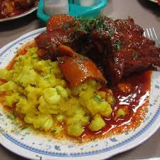
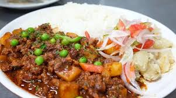
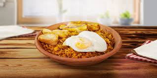
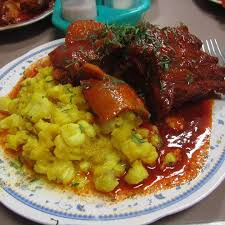
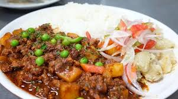
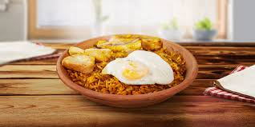

La comida nacional de Bolivia es la salteña, una empanada rellena de carne, pollo o cerdo, con un jugoso caldo, papas, cebollas, guisantes, y a veces aceitunas, pasas o huevo duro. La masa es ligeramente dulce, y su distintivo es que se sirve caliente, por lo que se come con cuidado para evitar quemarse con el caldo en su interior. Aunque la salteña es ampliamente reconocida como una comida emblemática, la gastronomía boliviana es rica y variada, con platos típicos como el sajta de pollo (un guiso picante de pollo con papas), el silpancho (carne empanizada servida con arroz, papas y huevo frito), y el pique macho (un plato de carne de res, salchichas, papas fritas, y verduras con salsa picante). Estos platos reflejan la diversidad cultural y geográfica de Bolivia, con influencias indígenas, españolas y de otras culturas andinas.
 




